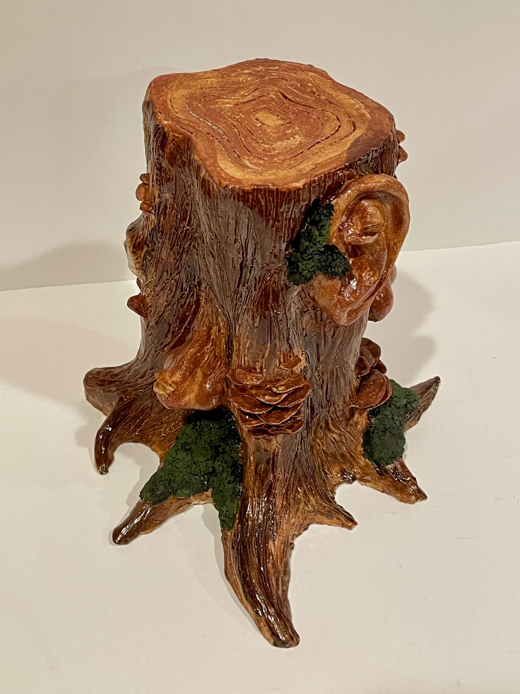
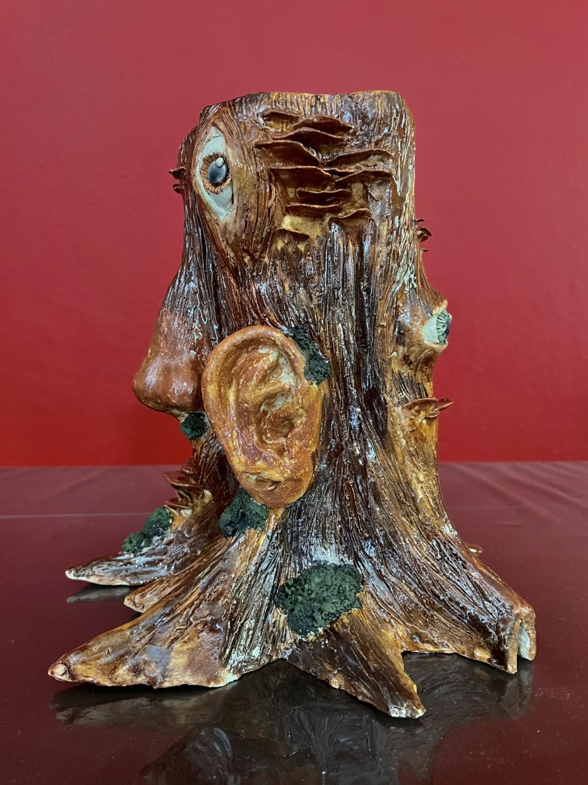
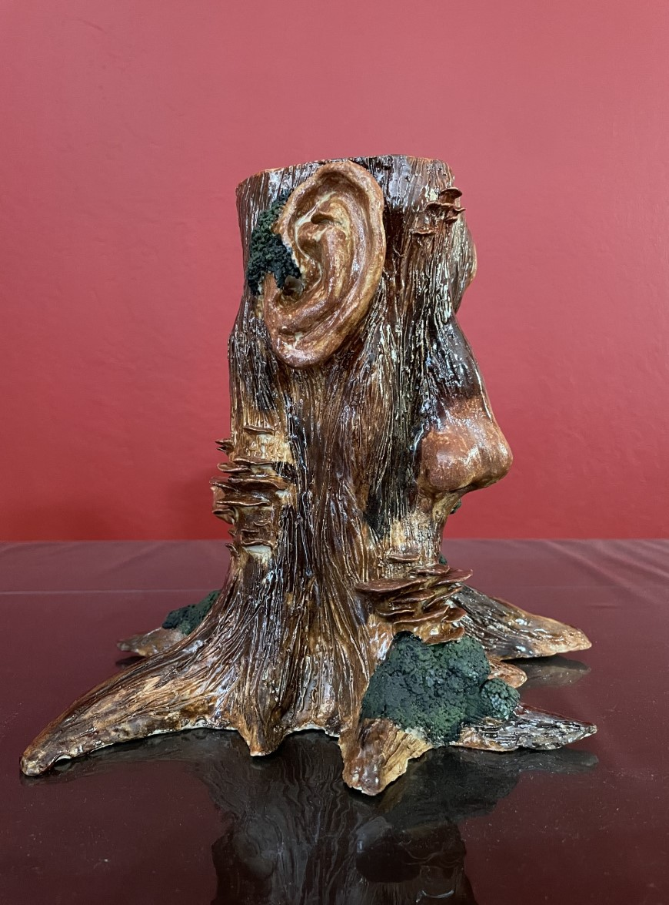
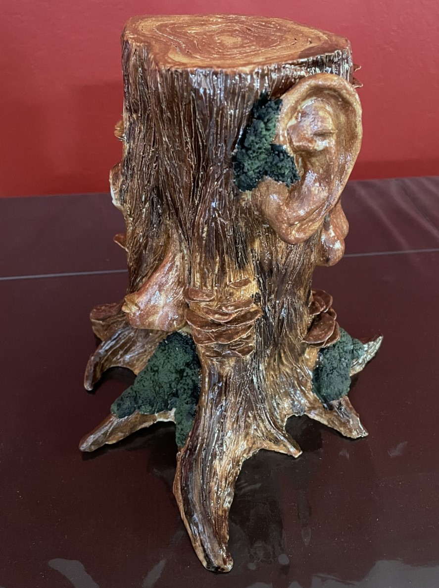

Tree Stump
- Medium
- Ceramics
I grafted face parts onto a dead tree stump with moss and mushrooms to show the trees have lives, too. The stump covered in diverse human facial features encourages dialogue about climate change. The stump symbolizes how deforestation leaves a lasting impact on the environment, ultimately affecting all of humanity.



